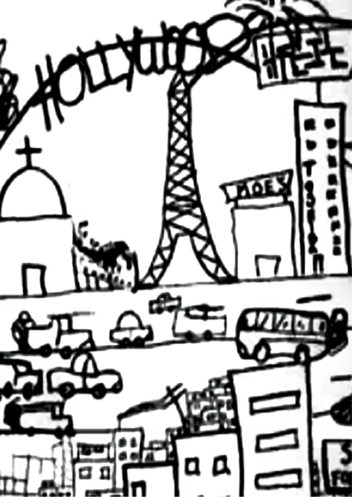
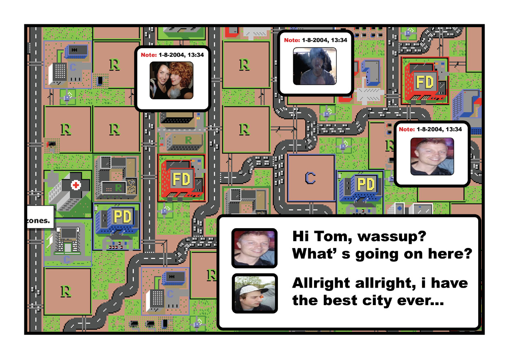
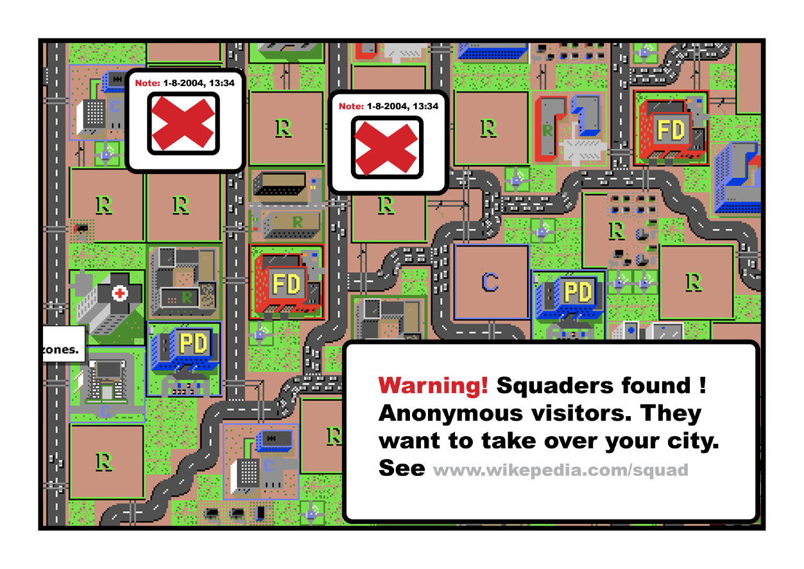
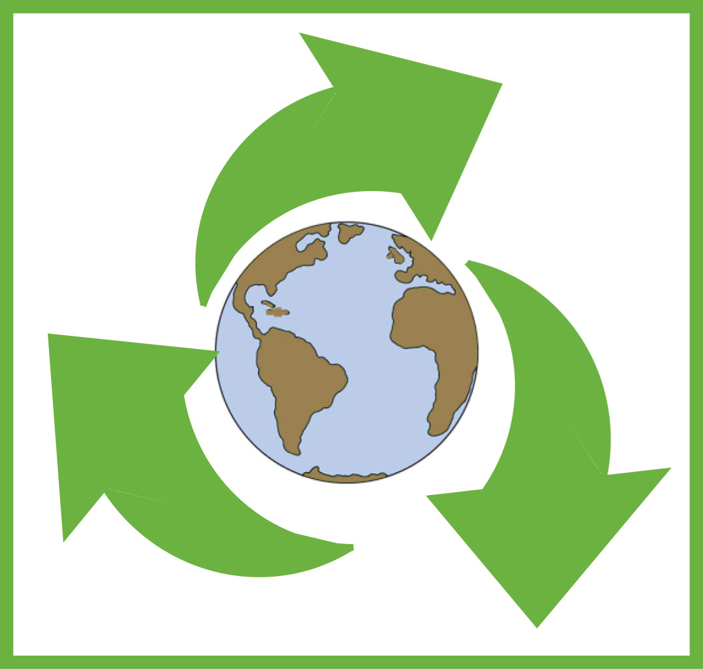
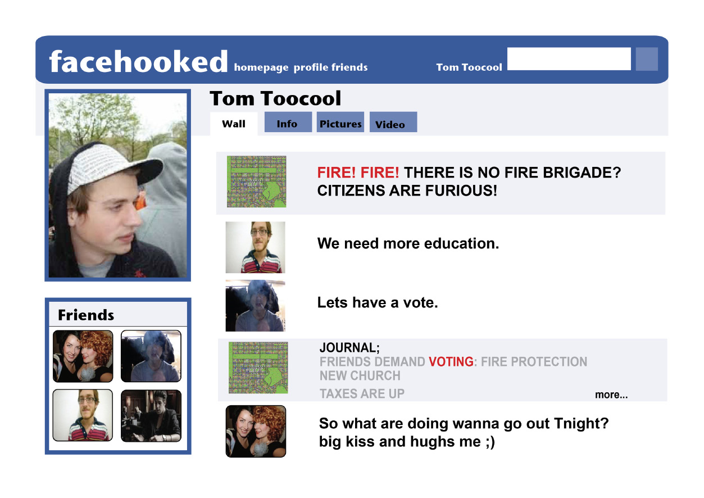
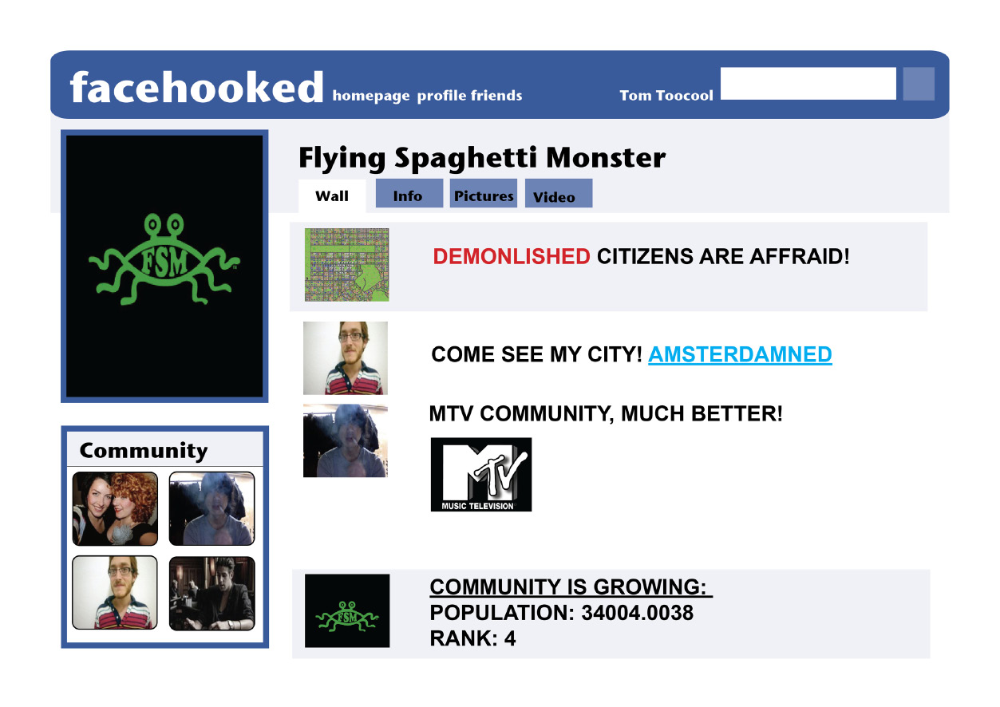
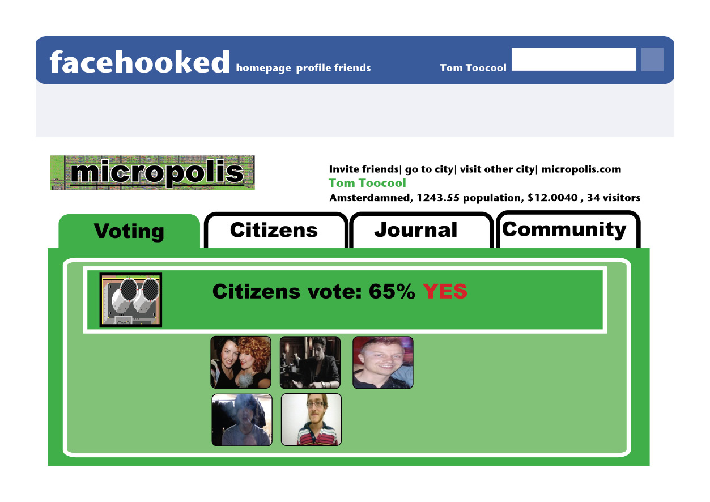
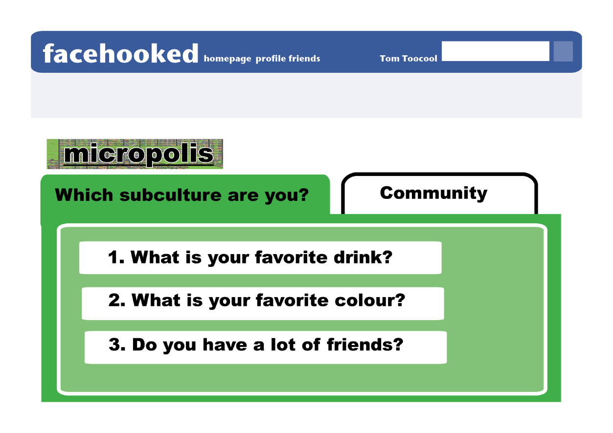

Don Hopkins; Game designer/programmer.
Tom Tjon A Loi; product designer/concept.
MICROPOLIS EDUVERSE:
MAKE BELIEVE REALISM.
SimCity / Micropolis:
Introduction.
“Is it time- to be mayor? Do you have the skills to develop a metropolis of soaring skyscrapers or the aesthetic sensibilities to create a society of your wildest imagination. Do you enjoy thinkering with an entire world- widening a riverbed there, increasing tax rate here-to see the efectson inhabitants under your sway? Or do you want to get dirty with the citizents in your streets, taking missions that have you hurtling down highways in a tank?”
SimCity is a city building simulation game, which provides players with a set of rules and tools to describe, create and control a simulated city.
It's less structured and goal oriented than most computer games, and more like a free form sandbox or constructive legos.
Micropolis is the open source version of SimCity. Electronic Arts and Will Wright relicensed the original game source code and artwork under the Gnu General Public License version 3, so it can be renovated and developed into an easily accessible, educational game.
Make believe Realism.
implentation google earth sim earth.
.
reconstruction Staten Island Simcity 4.
Make believe Realism.
Daniel G. Lobo,
Why is SimCity so successful as a game and educational tool?
“SimCity: One of the most influencial strategy games in the history of urban planning.”
“From the beginning, SimCity stressed a desire to influence policy and especially education by nurturing reflection on the nature of ideal cities. No other game has been used so widely at so many levels of schooling to help illuminate the different elements of local government and city society.”
“The difference between SimCity and a real city seems to be narrowing as new versions of the game take more sophisticated real-life issues into consideration.”
Make believe Realism.
David Thomas,
“SimCity allows players to test theories and construct mental models of a hidden system.”
The digital models running on a computer are only compilers for the mental models users construct in their heads. The actual end product of SimCity is not the shallow model of the city running in the computer.
More importantly, it’s the deeper model of the real world, and the intuitive understanding of complex dynamic systems, that people learn from playing it, in the context of everything else about a city that they already know. In that sense, SimCity, SimEarth, and SimAnt are quite educational, since they implant useful models in their users minds.
Make believe Realism.
Micropolis is a computer generated game based on simcity original.(videoclip)
Micropolis eduverse:
Concept.
a fun, community oriented, political, social, web based, educational game, based on the original SimCity source code,
Micropolis plays in the web browser with Flash, so players can run the game on any computer, without installing any software.
The simulation and community site runs on the web server, which connects players together, so they can communicate with each other, form communities, share games and collaborate. Players have an identity, and a profile in which they can describe themselves and their interests.
The simulation gives the player an identity, and it is the player who decides what to do with the given identity: to join an excisting community or to start their own.
The web server provides a medium for chat, discussion and debate, and a library of cities for players to share.
Players participate in the democratic process, colaborate online, propose and debate issues, vote on propositions, build zones and develop the city.
Make believe Realism.
Micropolis eduverse:
storytelling.
Journalism. Newpaper publishing. Blogging. Twitter. Facebook, wikipedia, etc.
Micrpolis will give players the opportinuty to write stories and articles about events and issues in the city.
“The Sims Exchange” is a popular online community where players of “The Sims” publish web pages about their houses, their families, and their stories, with save files that other players can download and play on their own computers.
Micropolis will apply that idea at the urban level, by publishing web pages about cities, around which players can write and publish stories like a newspaper or blog, about events and issues that interest and educate them.
Micropolis can be used to teach many things: language skills, creative writing, journalism, social studies, science, interpersonal communication, democratic process, debating and research.
.
We will develop constructionist educational materials, scenarios and user stories for Micropolis
It will be built on top of standard Wikimedia technology (the same as used by Wikipedia), and integrate Micropolis with Wikimedia.
Wiki pages can embed live simulations, data visualizations, graphs and pictures from Micropolis. Players can write Wiki pages, stories and discussions about their cities. Micropolis can generate dynamic content, so it can publish Wiki pages with hyperlinked information about cities, journals, stories, scenarios and educational experiences.
Make believe Realism.
chat function, citizens and players can talk to echtother.
Happening in the city with wikepedia link.


Make believe Realism.
Micropolis eduverse:
culture identities and communities.
Make believe societies; Connecting Micropolis eduverse with Society and vice versa.
Micropolis will be integrated with online communities and social networks, to enable colaboration and sharing, and as a medium for storytelling and interactive discussion.
Build on top of the widely used Facebook social network: “Facebook is a social utility that connects people with friends and others who work, study and live around them.
Leverage the well supported features of Facebook, including identity, groups, walls, notices, discussions, communities.
Enable your friends to see important events and stories about your city, and comment and vote on issues, creating an opposition for your city.
We are adding plug-in cultures to Micropolis, so you can have zones representing different religions, communities, social institutions and lifestyles.
The plug-in cultures can affect your city, interact with each other, send you messages, tell you about themselves, and link to more information on the internet.
Make believe Realism.
Micropolis identities from left to right: Flying Spaghetti Monster, Hollywood, squatters, the crusaders, Gaia.

Make believe Realism.
facebook profile application: pubblished journal.
flying spaghetti Monster community page.


Make believe Realism.
facebook profile application: Given identiity.
facebook profile application: voting.


Make believe Realism.
Seymour Papert defined constructionism in a proposal to the National Science Foundation entitled “Constructionism: A New Opportunity for Elementary Science Education” as follows: “The word constructionism is a mnemonic for two aspects of the theory of science education underlying this project.
From constructivist theories of psychology we take a view of learning as a reconstruction rather than as a transmission of knowledge.
Then we extend the idea of manipulative materials to the idea that learning is most effective when part of an activity the learner experiences as constructing a meaningful product.”
“Constructionism is a philosophy of education in which children learn by doing and making in a public, guided, collaborative process including feedback from peers, not just from teachers.”
Make believe Realism.
While constructionism has, due to its impetus, been primarily used in science and mathematics teaching (in the form of inquiry-based science).
it is arguable that it developed in a different form in the field of media studies in which students often engage with media theory and practice simultaneously, in a complementary praxis.
More recently it has gained a foot hold in Applied linguistics, in the field of second language acquisition (or SLA).
One such application has been the use of the popular game SimCity as a means of teaching English using constructionist techniques
(Gromik:2004).
Make believe Realism.
Micropolis eduverse:
Goals.
1. Develop a fun, community
oriented, web based, educational
game, based on the original
SimCity source code, called
“Micropolis Eduverse”.
2. Focus on constructionist
education, and learning by
building and collaborating
with friends.
3. Build the system out of free
open source, software, so other
people can collaborate and
benefit.
4. Runs on the server, plays in the
browser.
5. Supports collaborative,
democratic, multi-user play.
Make believe Realism.
Micropolis eduverse:
Presentation. 27 September.
1. Teaser (concept) game, 5 video clips, each with each a different
ending.
requirements: video and sound equipment for projection.
2. interactive installation (low tech). Illustration of ideology. Magnetic tiles that people can draw on and put on an object.
requirements: surface 3x3 meter
Make believe Realism.